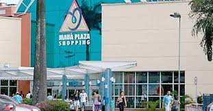

Local
Centro de Convenções Mauá no shopping Mauá Plaza

Fácil acesso, você pode chegar lá com uma mercedes identica à da foto.
Local histórico e tombado pela cidade de Mauá, ponto de encontros e casa do paipai noel em dezembro.
Local histórico e tombado pela cidade de Mauá, ponto de encontros e casa do paipai noel em dezembro.
Vassoura!!!
Se você estudou em Hogwarts(universo Harry Potter) ou em outra escola de mágia, poderá vir de vassoura, se não quiser desaparatar. É nóis que voa Bruxão.
CPTM!!!
Linha Turquesa da CPTM, trem com todo seu explendor e beleza paisagística.